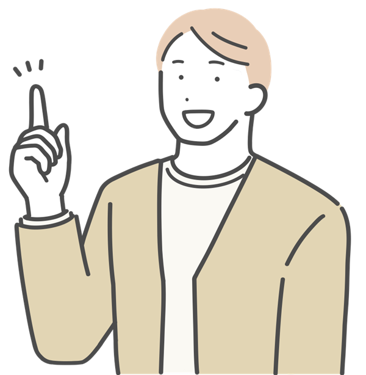

{{ st.quote }}
{{ st.who }}わたしの言葉で、
世界とつながる。
2027
ADMISSIONS
大学について
ABOUT US
自ら考え、
他者と生きる。
女性が学ぶ場をひらくことから始まった本学は、創立以来、一人ひとりの声を大切にする教育を続けてきました。問いを立て、対話し、行動する。その積み重ねが、社会で自分らしく生きる力になると考えています。
01 / DIALOGUE
少人数ゼミで、1年次から対話を重ねる学び
02 / GLOBAL
海外協定校への留学や、学内での国際交流
03 / CAREER
卒業生とつながる、4年間一貫のキャリア支援

大学について詳しく
学部・学び
ACADEMICS
LEARNING STYLE
{{ l.title }}
{{ l.desc }}
※学部・学科名および内容はサンプルです。
学部・学びを詳しく
キャンパスライフ
CAMPUS LIFE
入試・オープンキャンパス
ADMISSIONS
{{ e.en }}{{ e.ja }}
{{ e.desc }}
試験日程・出願期間について
各日程は、本年度の入学者選抜要項にて公表します。必ず最新の要項をご確認ください。
入試情報を詳しく
{{ ocFx }}
OPEN
CAMPUS
キャンパスで、
未来の自分に
会いにいく。
模擬授業、学科説明、在学生によるキャンパスツアー、個別相談。実際に歩いて、話して、確かめてください。
開催日程は決定次第お知らせします。
オープンキャンパスを予約する